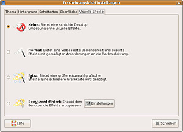
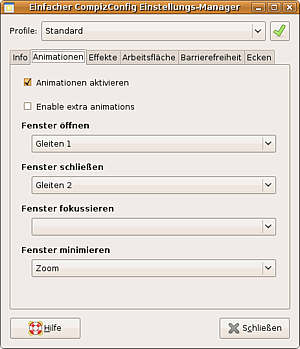

Desktop-Effekte
Hinweis:
Für Ubuntu 11.04 oder neuer bitte den Artikel Compiz CCSM zu Rate ziehen.
Archivierte Anleitung
Dieser Artikel wurde archiviert, da er - oder Teile daraus - nur noch unter einer älteren Ubuntu-Version nutzbar ist. Diese Anleitung wird vom Wiki-Team weder auf Richtigkeit überprüft noch anderweitig gepflegt. Zusätzlich wurde der Artikel für weitere Änderungen gesperrt.
Zum Verständnis dieses Artikels sind folgende Seiten hilfreich:
Seit Ubuntu 7.10 sind visuelle Effekte fest in Ubuntu eingebaut. Unterstützt der Grafiktreiber des Systems 3D-Beschleunigung, so werden die Effekte von Haus aus aktiviert - dies ist jedoch nur bei manchen Grafikkarten von Intel und ATI der Fall. Ansonsten muss zuerst ein proprietärer Grafiktreiber nachinstalliert werden (Nvidia). Erst dann kann das System die Effekte darstellen.
Die visuellen Effekte aktivieren den Fenstermanager Compiz, der dann die Effekte generiert. Bei der Einstellung "Normal" werden die Effekte nur sehr behutsam eingesetzt: Fensterrahmen von im Hintergrund gezeichneten Fenstern werden beispielsweise transparent, und Fenster werden beim Minimieren und Maximieren animiert in das Panel geschoben. Ausgefallene Effekte wie z.B. beim Verschieben wabbelnde oder beim Schließen abbrennende Fenster müssen extra aktiviert werden.
Einrichten¶
 Die Desktop-Effekte können unter GNOME in den Einstellungen zum Erscheinungsbild eingerichtet werden:
"System -> Einstellungen -> Erscheinungsbild -> Visuelle Effekte"
Hinweis:
Ab Ubuntu 11.04 sind die "Visuellen Effekte" nicht mehr verhanden, da für Unity ein voll funktionierendes Compiz zwingend erforderlich ist und es, mal abgesehen von "Unity-2D", auch nicht abgewählt oder deinstalliert werden sollte!
Unter Kubuntu sind die nativen Effekte zu empfehlen. Wer jedoch Compiz nutzen möchte, muss dessen Konfigurationsdialog für die Effekte zuerst über folgendes Paket installieren [1]:
desktop-effects-kde
 mit apturl
mit apturl
Paketliste zum Kopieren:
sudo apt-get install desktop-effects-kde
sudo aptitude install desktop-effects-kde
Den Dialog für Compiz startet man dann über:
"K-Menü -> System -> Desktop Effects"
Zur Wahl stehen:
| Visuelle Effekte | |
| Stufe | Bedeutung |
| "Keine" | Desktop-Effekte werden komplett deaktiviert, als Fenstermanager wird Metacity (GNOME) bzw. KWin (KDE) benutzt. |
| "Normal" | Einfache Desktop-Effekte werden aktiviert. Fenster gleiten beim Minimieren bzw. Wiederherstellen nun sanft in die Taskleiste. |
| "Extra" | Aufwendigere Effekte, wie beim Verschieben "wabbelnde" Fenster, werden zusätzlich aktiviert. |
Diese drei Einstellungsmöglichkeiten ermöglichen das äußerst unkomplizierte Einrichten der visuellen Effekte. Allerdings kann Compiz deutlich mehr. Allerlei Effekte - von äußerst nützlich bis zu reiner Spielerei - und jedes Detail lässt sich einstellen. Dazu müssen jedoch weitere Programme installiert werden.
Konfigurieren¶
Einfacher CompizConfig Einstellungs-Manager¶
Achtung!
Ab Ubuntu 11.04, ob mit oder ohne Unity, darf dieser Konfigurations-Editor nicht mehr installiert werden. Ansonsten ist das komplette System bei der nächsten Anmeldung nicht mehr erreichbar!
 Zur Konfiguration gibt es zwei Möglichkeiten: der "Einfache CompizConfig Einstellungs-Manager" und der erweiterte CompizConfig Einstellungs-Manager. Der "Einfache CompizConfig Einstellungs-Manager" soll die Konfiguration von Compiz benutzerfreundlicher gestalten. Nach der Installation [1] des Paketes
simple-ccsm (universe, nur bis einschließlich Ubuntu 11.04 in den Quellen)
mit apturl
Paketliste zum Kopieren:
sudo apt-get install simple-ccsm
sudo aptitude install simple-ccsm
kann man diesen über die Schaltfläche "Benutzerdefiniert" im Reiter "Visuelle Effekte" bzw. über
"System -> Einstellungen -> Einfacher CompizConfig Einstellungs-Manager"
starten. Das Programm vereinfacht die Konfiguration einer Reihe von Effekten deutlich. Über verschiedene Profile lassen sich vorkonfigurierte Einstellungen abrufen. Wer will, kann in den einzelnen Reitern noch zusätzlich einzelne Effekte einstellen.
| Einfacher Compiz Config Einstellungs-Manager | |
| Effekt | Auswirkung |
| "Info" | Generelle Informationen |
| "Animationen | Animationen beim Öffnen, Schließen oder Minimieren von Fenstern. |
| "Effekte" | "Anwendungsumschalter:" Effekt beim Drücken von Alt + Tab ⇆ zum Wechseln von Anwendungen; "Desktop-Würfel Effekte:" Die einfachste Art den aus vielen Videos und Demos bekannten Würfel zu aktivieren und einzurichten; "Ergänzungen:" Zusätzliche Effekte wie Scale, Expo, Unschärfe beim Verschieben von Fenstern und "wackelnde" Fenster beim Verschieben. |
| "Arbeitsfläche" | "Aussehen:" Effekt bei Drücken von Alt + Strg und gleichzeitigem Bewegen der Maus bei gedrückter linker Maustaste zeigt die virtuellen Desktops Tafel oder Würfel an; "Arbeitsflächen Spalten/Reihen:" Zahl der Spalten und Reihen an virtuellen Desktops. |
| "Barrierefreiheit" | Funktionen für Sehbehinderte. So lässt sich mit der Maus das Bild vergrößern bzw. verkleinern. |
| "Ecken" | Die Ecken und Kanten des Bildschirmes lassen sich mit Funktionen belegen. So kann man beispielsweise das Expo-Plugin aktivieren lassen, wenn man mit der Maus in die rechte obere Ecke fährt. |
Weiterführende Einstellungen lassen sich über diesen Assistenten jedoch nicht vornehmen, hier muss man auf den "CompizConfig Einstellungs-Manager" zurückgreifen.
Erweiterte Konfiguration¶
Mit dem CompizConfig Einstellungs-Manager lassen sich die visuellen Effekte von Compiz bis in kleinste Detail einstellen. Das Programm ist daher äußerst komplex. Es war ursprünglich für Leute gedacht, die beispielsweise vordefinierte Sets an Animationen für eine Linux-Distribution bereitstellen wollen. Dies sollte bei der Nutzung berücksichtigt werden.
Problembehebung¶
Die Desktop-Effekte konnten nicht aktiviert werden¶
Gelegentlich kommt es beim Versuch, die Effekte zu aktivieren, zu dieser Fehlermeldung. Leider sagt die Fehlermeldung nichts über die genaue Ursache aus. Um eine aussagekräftigere Fehlermeldung zu erhalten, muss Compiz in einem Terminal gestartet werden:
compiz --replace &
Dabei wird das System überprüft und einige Statusmeldungen ausgegeben. Sollte eine der Überprüfungen fehlschlagen, dann wird Compiz nicht gestartet und stattdessen der Standard-Fenstermanager geladen.
Weitere Probleme und Lösungen sind im Artikel Compiz/Problembehebung zu finden.
 Übersichtsartikel
Übersichtsartikel- Erstellt mit Inyoka
-
 2004 – 2017 ubuntuusers.de • Einige Rechte vorbehalten
2004 – 2017 ubuntuusers.de • Einige Rechte vorbehalten
Lizenz • Kontakt • Datenschutz • Impressum • Serverstatus -
Serverhousing gespendet von